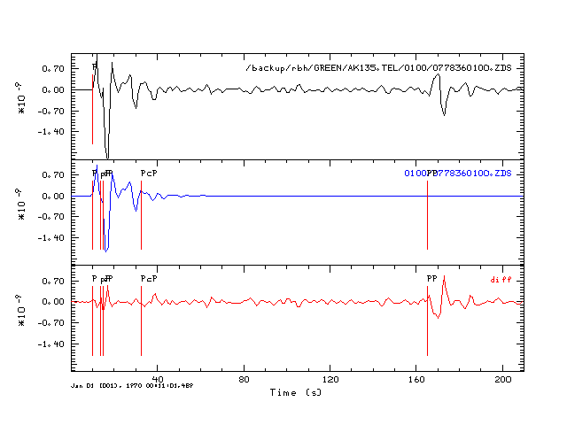
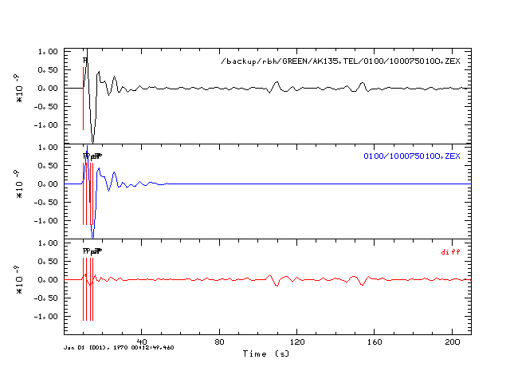

Introduction
The purpose of this test is to compare the hudson96 teleseismic P-wave
synthetics for the AK135 model (tak135sph.mod)
to the wavenumber integration synthetics where are described in the Synthetics
for a Spherical Earth tutorial.
The hudson96 synthetics are
made for DT=0.1 sec, but are converted to be equivalent to the current
AK135.TEL synthetics computed using DT=1.0 and a triangular source time
function of width 4.0 sec by using the gsac
commands
triangle width 4
interpolate delta 1
To assist in the comparison gsac
is used to subtract the hspec96
from the hudson96 synthetic.
The traces are also annotated with the predicted arrival
times of AK135 for pPm sP, PP and PcP using the University of
South Carolina taup_time code.
The purpose of the annotation
is to focus on those parts of the hudson96 synthetics that
differ significantly form the complete synthetics, which are typically
the PP and PcP phases.
The comparison is orders in columns by the Green's function for the
vertical component ground velocity: the DD, DS, SS and EX
sources.
Although a 600 km deep center of expansion source is not realistic, the
Green's function is required to describe the full moment tensor.
For each of the two depths considered, 10 and 600 km, there is a row
for arc distances of 30, 50 70 and 90 degrees.
Discussion
Although a discussion is normally at the end, the figures require a lot
of screen space.
The conclusions of the comparison are
- The P, pP and sP portions of the hudson96 synthetics agree well
with the complete synthetics. Slight differences may be do to the
sampling granularity
- If the hudson96
synthetics are used for broadband depth modeling, then car must be
taken to avoid the PP arrivals. Thus the modeling window may have to be
narrower at shorter epicentral distances than at large. PcP is a
problem at larger distances, but not as severe a problem as PP
- There are some problems with the pP amplitude for the 600 km deep
source, both in terms of amplitude and arrival time. This may be due to
the assumption that the ray parameter is the same for pP as for P.
Scripts
Comparison
| ZDD |
ZDS |
ZSS |
ZEX |
Gcarc=30, HS=10 |
Gcarc=30, HS=10 |
Gcarc=30, HS=10 |
Gcarc=30, HS=10 |
Gcarc=50, HS=10 |
Gcarc=50, HS=10 |

Gcarc=50, HS=10 |
Gcarc=50, HS=10 |
Gcarc=70, HS=10 |

Gcarc=70, HS=10 |
Gcarc=70, HS=10 |
Gcarc=70, HS=10 |

Gcarc=90, HS=10 |

Gcarc=90, HS=10 |
Gcarc=90, HS=10 |

Gcarc=90, HS=10 |
Gcarc=30, HS=600 |
Gcarc=30, HS=600 |
Gcarc=30, HS=600 |
Gcarc=30, HS=600 |
Gcarc=50, HS=600 |
Gcarc=50, HS=600 |
Gcarc=50, HS=600 |
Gcarc=50, HS=600 |
Gcarc=70, HS=600 |
Gcarc=70, HS=600 |
Gcarc=70, HS=600 |
Gcarc=70, HS=600 |
Gcarc=90, HS=600 |
Gcarc=90, HS=600 |
Gcarc=90, HS=600 |
Gcarc=90, HS=600 |